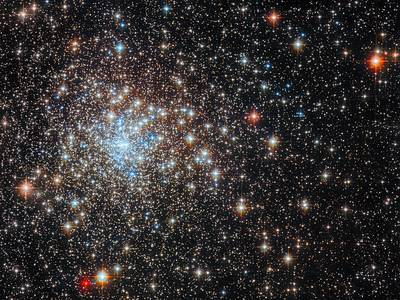
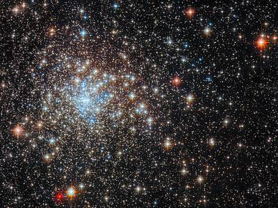

Capricorn Canopus
 

Top de estrellas masivas
- R136a1,estrella hipergigante azul
- Estrella de la Nebulosa Peonía
- Estrella Pistola
Misiones espaciales
- Apolo 8
- Géminis
- Apolo 11
- Luna 1
- Curiosity
Astrobiologia
La astrobiología se refiere a tres preguntas básicas, que se han preguntado en alguna forma por generaciones. La astrobiología es emocionante hoy porque tenemos la tecnología para comenzar a responder estas preguntas fundamentales:
¿Cómo comienza y se desarrolla la vida?
¿Existe la vida en otras partes del universo?
¿Cuál es el futuro de la vida en la Tierra y más allá?
Este campo interdisciplinario requiere una comprensión integral e integrada de los fenómenos biológicos, geológicos, planetarios y cósmicos. La astrobiología abarca la búsqueda de entornos habitables en nuestro sistema solar y en planetas alrededor de otras estrellas; la búsqueda de evidencia de química prebiótica o vida en cuerpos del sistema solar como Marte, la luna Europa de Júpiter y la luna Titán de Saturno; e investigación sobre el origen, la evolución temprana y la diversidad de la vida en la Tierra.
Origen del universo
Las explicaciones acerca del origen del universo las encontramos en la teorías religiosas y las teorías científicas, en las primeras se atribuye a la creación de un ser divino en donde se toma como tal y no se cuestiona absolutamente nada, en tanto que en las científicas se busca dar una explicación a través de modelos apoyados en la Cosmología Física en las que menciona que el origen del universo producto de una gran explosión, que siempre está en expansión y en continuos ciclos de explosión-expansión- contracción- explosión-expansión-contracción ……. y que podría que estemos viviendo en uno de tantos universos que hayan existido.
Origen de las estrellas
Las estrellas no son objetos inmutables. Nacen, envejecen y mueren, aunque estos procesos suceden tan lentamente que no son apreciables en escalas de tiempo humanas. El nacimiento de una estrella, por ejemplo, dura varios cientos de miles de años, y empieza cuando una región del medio interestelar se hace lo suficiente densa y masiva como para que la fuerza de la gravedad rompa el equilibrio en que se encontraba. Cuando esto sucede, el material inicia un proceso de contracción que solo termina al crearse una estrella, en cuyo interior la fuerza de la gravedad es equilibrada mediante la producción de energía por reacciones nucleares. Formación de estrellas El proceso de formación de una estrella sucede dentro de una nube molecular, que es un objeto extraordinariamente opaco. Es por tanto invisible a nuestros ojos, aunque puede ser estudiado mediante observaciones de la radiación infrarroja y radio. Gracias a este tipo de observaciones, los astrónomos han sido capaces de entender (todavía de forma incompleta) los estadios por los que pasa una estrella al nacer, y reconstruir, por tanto, el nacimiento de nuestro Sol hace casi cinco mil millones de años.
El proceso de formación de una estrella da lugar no sólo a un objeto central denso (la protoestrella), sino que también forma de manera natural un disco de materia girando a su alrededor. Este disco contiene el material que gira demasiado rápido como para concentrarse en la estrella, y da lugar al cabo de varios millones de años a un sistema planetario como el que forman la Tierra y los demás planetas. En estos primeros estadios, la protoestrella es un objeto muy activo, y produce un viento bipolar formado por dos chorros opuestos de material de alta velocidad. Estos chorros permiten a la estrella liberarse del exceso de giro (momento angular) aportado por el material del disco, que cae lentamente en espiral hacia la protoestrella. Los chorros, además, dispersan parte de la nube materna donde ha nacido la estrella y hacen que ésta, una vez formada, sea visible a nuestros ojos.
Mujeres mexicanas astronautas y científicas en la NASA
Carmen Felix
Con tan solo 5 años, Carmen ya se preguntaba de qué estaban hechas las estrellas y tenía esa curiosidad de saber qué hay más allá de lo que vemos. En 2016, Carmen se convirtió en la primera astronauta análoga mexicana en una simulación que fue llevada a cabo por la NASA, en donde se tenían condiciones muy similares a las de Marte.
La joven sinaloense de 33 años de edad fue reconocida con el Premio Mujer Tec 2019 por su misma casa de estudios en la que estudió Ingeniería en Electrónica y Telecomunicaciones, además de contar con una maestría de en Ciencias Espaciales en la Universidad Espacial Internacional ubicada en Francia. En el lapso del 2009 al 2010 fue la única mujer en la NASA.

Ellen Ochoa
Como sus padres son de origen mexicano, Ochoa es considerada desde 1991 la primer mujer astronauta mexicana en viajar hacia el espacio a bordo de misiones en el Discovery y el Atlantis.
Ha recibido varios honores de la NASA como el de La Medalla de Servicio Excepcional (1997), La Medalla de Excelente Liderazgo (1995), Medallas de Vuelos Espaciales (1993-1994-1999) y dos Premios Espaciales Técnicos en 1992. Ademas, de dirigir importantes grupos para después convertirse en la primera directora de origen hispano en el Centro Espacial Lyndon B. Johnson de la NASA desde el 2013.

Javiera Cervini Silva
La brillante licenciada en Química por la UNAM, Maestra en Ingeniería Ambiental por la Universidad de Illinois y Doctora en Química Ambiental, fue investigadora en el Center for Integrative Planetary Science y fue Subdirectora del Instituto de Astrobiología de la NASA (Programa BioMARS) en la Universidad de California en Berkeley, de 2003 a 2005.
Su magno currículum le ayudó a participar en tareas de suma importancia como la posibilidad de vida en Marte, en donde estudiaba su superficie y los proceso atmosféricos marcianos. Hoy en día es profesora-investigadora del Departamento de Procesos y Tecnología de la Universidad Autónoma Metropolitana Unidad Cuajimalpa.
:quality(85)//arc-anglerfish-arc2-prod-infobae.s3.amazonaws.com/public/AMC7UNELNZBLNLCFHGI62VFBTA.jpg)
Katya Echazarreta
La joven de 26 años, le dedicó a México su viaje al espacio a través de un video publicado por la empresa Blue Origin, convirtiéndose en la primera mujer mexicana viajando al espacio. El cohete New Shepard, en el que la ingeniera eléctrica viajó junto con otros cinco tripulantes, fue lanzado en Texas, Estados Unidos, a las 8:25 de la mañana, hora de la Ciudad de México, para un vuelo de 10 minutos